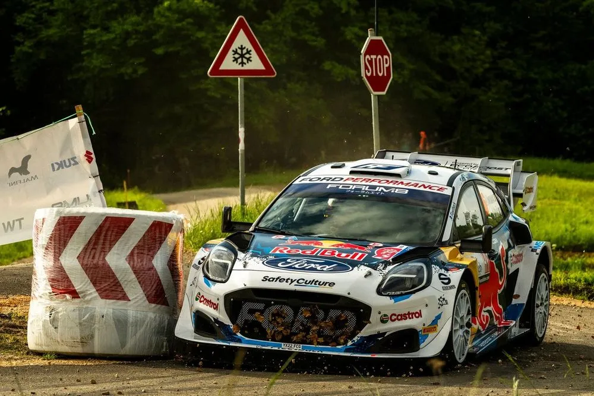
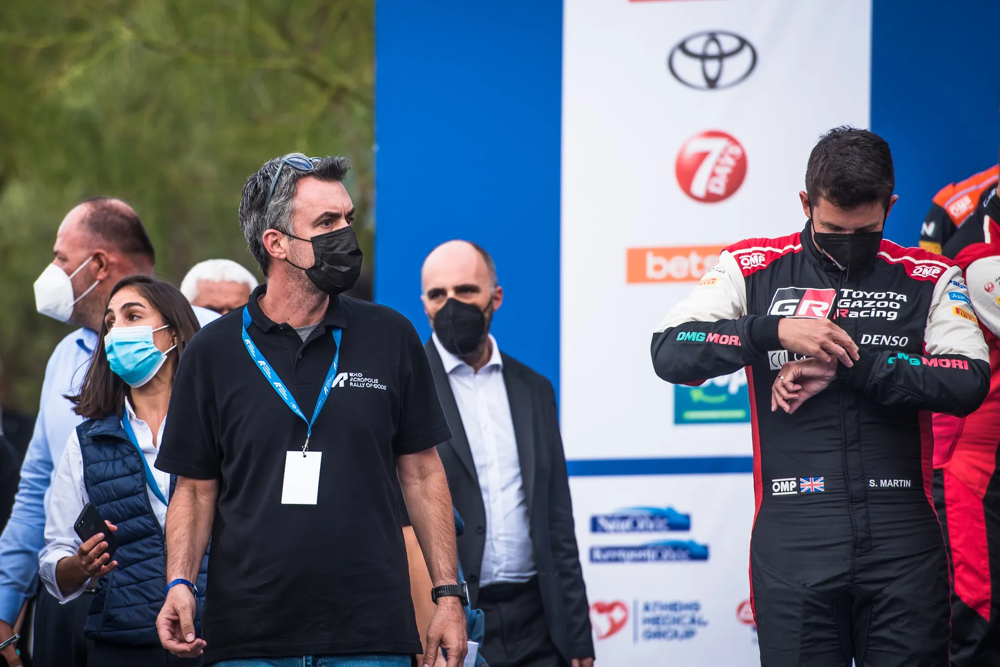
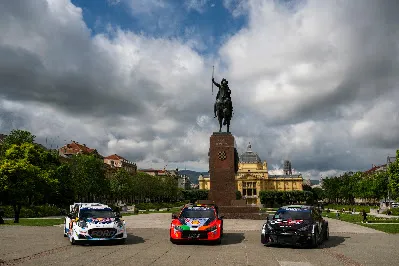
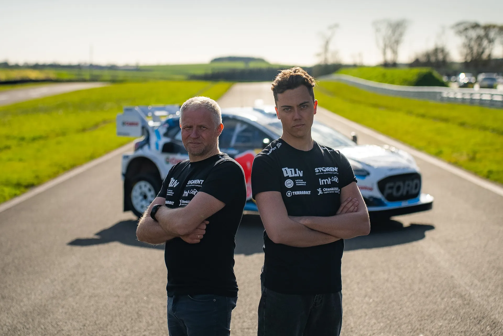
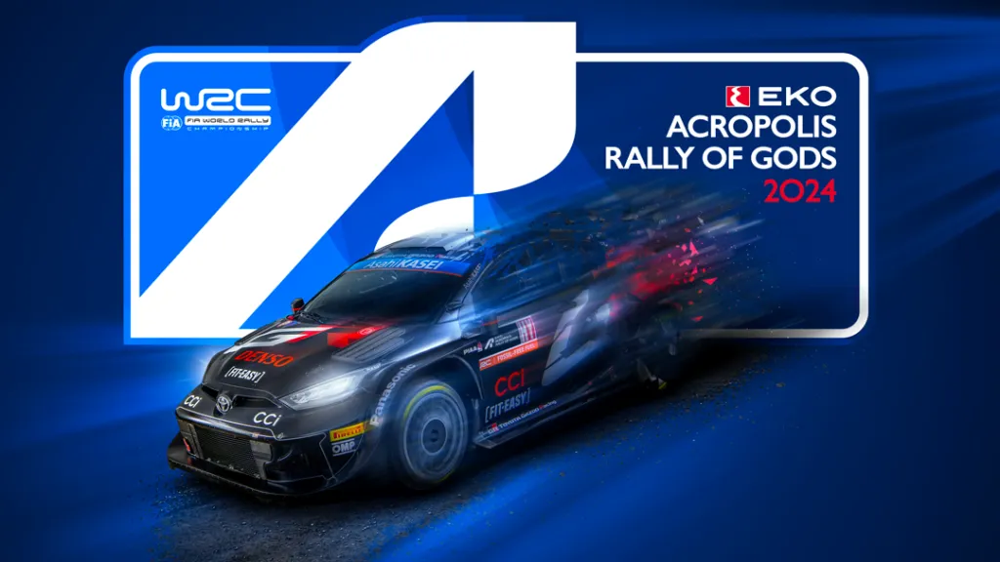

An inside look on last weekend's FIA meeting
Rally Croatia was without a doubt, one of the best rallies of the season so far. The rally had 3 drivers going head to head for the overall win, with Sebastien Ogier emerging victorious after his foes, Thierry Neuville and Elfyn Evans, both went off and lost time on the first pass of Zagorska Sela - Kumrovec. But as this rally was unfolding, there was a meeting in Zagreb between FIA officials, team representatives and rally officials.
As mentioned in our Rally Croatia Preview episode, the goal of the meeting was for the FIA and teams to discuss what the 2025 Technical Regulations would look like, as well as discussing the proposed Sporting Regulations with rally officials. In an interview on Cosmote TV, Rally Acropolis event director, Pavlos Athanassoulas gave us an insight of what was discussed in those meetings, and what we can expect going forwards.

Athanassoulas said that there seems to be a "harmony" between the three Rally1 manufacturers on the Technical Regulations issue, with all three makers asking the FIA to respect the Rally1 homologation cycle, meaning that they ask for Rally1s to remain until the end of 2026. What's interesting was that Athanassoulas also mentioned that Rally2 manufacturers are also in agreement with M-Sport, Toyota and Hyundai, in that they too reject the FIA's proposals for next year.

Jaanus Ree / Red Bull Content Pool
What seems to be in universal agreement between the FIA and the teams, is that the amount of top class cars in rallies needs to be increased as soon as possible. A golden mean seems to have been reached, with Martins Sesks announcing that he will compete in Rally Poland and Rally Latvia in an M-Sport Puma with Athanassoulas mentioning that more young drivers will have the opportunity to do so this year. So we could see more WRC2 hopefuls jumping into Rally1 machinery this year, or next year. It's worth mentioning that on the official announcement for Sesks' entry for Poland and Latvia, there was a hint about this, with the announcement mentioning that his entry was backed by the WRC promoter.

As for Rally Acropolis, Athanassoulas mentioned that the Rally Guide will be released on May 2nd, as the original date clashed with the Orthodox Easter. For the rally proper, he stated that the itinerary for the event will be an evolution of the previous year's, with some changes. He also mentioned that he expects that a double digit number of Rally1 cars will make the trip to Greece for Acropolis.

As for the rally's future, Athanassoulas mentions that Rally Acropolis' place on the calendar is safe, as long as the government continues its monitary support for the event, something that doesn't seem to be going away soon. He also stated that Acropolis will never bee a "sprint" event as per the FIA's proposed Sporting Regulations, and that the event organizers would be interested to explore the possibility of an endurance event, but there would also be other variables to consider, such as the government etc.

Comments